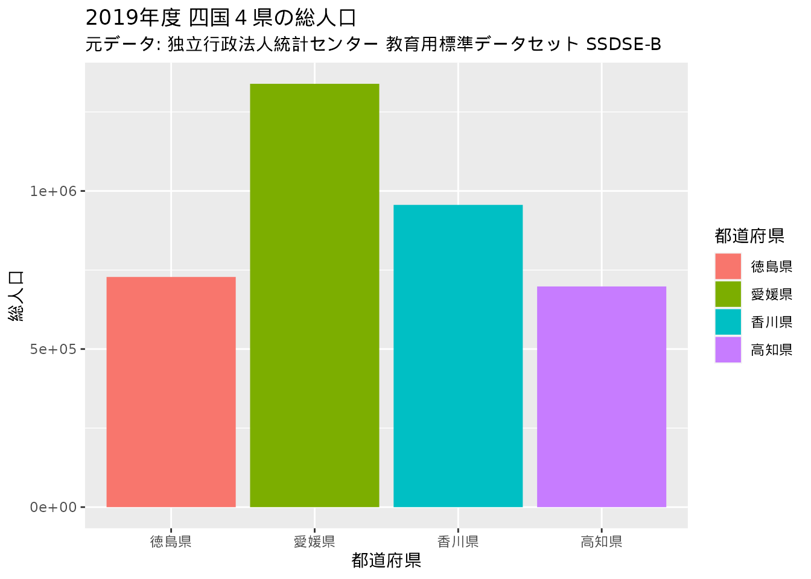

# 教育用標準データセット 県別推移 から四国４県のデータを取り出したものを読み込む
df_ssdse_b_tiny_shikoku <-
readr::read_rds(here::here("data-raw/ssdse_b_tiny_shikoku.rds"))グラフの作成
数値や表形式でのデータ表現は、データの内容を示すのに使うことができます。 一方でデータの量が多い場合やデータ間の比較が困難な場合があります。 グラフによるデータの表現は、データの傾向や特徴を視覚的に示すのに適しています。
ここでは、独立行政法人統計センターが公開する教育用標準データセットから、身近な統計データをグラフ上に可視化する例を示します。
1. データの用意
教育用標準データセットは、データサイエンス演習、統計教育などに活用されることを期待したデータとして独立行政法人統計センターが公開しているものです。 データにはいくつかの種類があり、都道府県・市区町村別の集計値、時系列別での値などがあります。
ここではSSDSE-県別推移（SSDSE-B）のデータを利用します。 このデータは総務省統計局がとりまとめた「統計でみる都道府県・市区町村のすがた(社会・人口統計体系)」の結果を 都道府県・時系列毎に整理したものです。
このうち、四国４県（徳島県、香川県、愛媛県、高知県）の項目を抜き出したデータを研修用に用意しています1。 次のコマンドを実行するとデータが読み込まれます。
都道府県・年度別に人口・世帯、自然環境、教育、家計の4つの項目についてのデータを格納しています。
dplyr::glimpse(df_ssdse_b_tiny_shikoku)Rows: 48
Columns: 17
$ 年度 <chr> "2019", "2018", "2017", "2016", "2015", "…
$ 都道府県 <chr> "徳島県", "徳島県", "徳島県", "徳島県", "…
$ 総人口 <dbl> 728000, 736000, 743000, 750000, 755733, 7…
$ `総人口（男）` <dbl> 347000, 351000, 354000, 357000, 359790, 3…
$ `総人口（女）` <dbl> 381000, 385000, 389000, 393000, 395943, 4…
$ 出生数 <dbl> 4554, 4998, 5182, 5346, 5586, 5502, 5666,…
$ 死亡数 <dbl> 10126, 10011, 10207, 9855, 9847, 9853, 10…
$ 年平均気温 <dbl> 17.4, 17.1, 16.7, 17.6, 17.0, 16.4, 16.8,…
$ `降水量（年間）` <dbl> 1543.0, 1760.0, 1496.0, 1715.0, 1985.5, 2…
$ 幼稚園数 <dbl> 122, 131, 143, 150, 161, 182, 189, 209, 2…
$ 小学校数 <dbl> 191, 192, 199, 207, 209, 222, 226, 253, 2…
$ 中学校数 <dbl> 89, 89, 90, 91, 92, 93, 94, 96, 96, 97, 9…
$ 高等学校数 <dbl> 37, 39, 38, 38, 38, 38, 39, 39, 42, 42, 4…
$ 短期大学数 <dbl> 3, 3, 3, 3, 3, 3, 3, 3, 3, 3, 3, 3, 2, 2,…
$ 大学数 <dbl> 4, 4, 4, 4, 4, 4, 4, 4, 4, 4, 4, 4, 4, 4,…
$ `消費支出（二人以上の世帯）` <dbl> 278855, 282732, 273835, 295192, 277856, 3…
$ `教育費（二人以上の世帯）` <dbl> 10024, 9706, 12652, 11736, 9903, 14504, 1…このデータの特徴や関係を理解するために、データをグラフに表現してみましょう。 四国４県の時系列の変化だけでなく、2019年度に限定したデータについても別途用意し、４県の比較をしてみましょう。
# 2019年のデータに絞り込む
df_ssdse_b_tiny_shikoku2019 <-
dplyr::filter(df_ssdse_b_tiny_shikoku,
年度 == "2019")
df_ssdse_b_tiny_shikoku2019# A tibble: 4 × 17
年度 都道府県 総人口 総人口…¹ 総人口…² 出生数 死亡数 年平…³ 降水量…⁴ 幼稚…⁵
<chr> <chr> <dbl> <dbl> <dbl> <dbl> <dbl> <dbl> <dbl> <dbl>
1 2019 徳島県 728000 347000 381000 4554 10126 17.4 1543 122
2 2019 香川県 956000 464000 492000 6631 12148 17.3 928. 128
3 2019 愛媛県 1339000 634000 705000 8446 18281 17.4 1144. 138
4 2019 高知県 698000 329000 369000 4270 10317 17.8 2538. 39
# … with 7 more variables: 小学校数 <dbl>, 中学校数 <dbl>, 高等学校数 <dbl>,
# 短期大学数 <dbl>, 大学数 <dbl>, `消費支出（二人以上の世帯）` <dbl>,
# `教育費（二人以上の世帯）` <dbl>, and abbreviated variable names
# ¹`総人口（男）`, ²`総人口（女）`, ³年平均気温, ⁴`降水量（年間）`, ⁵幼稚園数2. グラフ表現
グラフの表現方法は次に示す通り様々な種類があります。 またこのほかにも多様なグラフが存在します。
- 折れ線グラフ
- 棒グラフ
- 円グラフ
- 散布図
- 箱ひげ図
- ヒストグラム
Rには標準機能としてグラフ作成のための関数が利用でき、これらのグラフも作成可能です。 例えば、棒グラフの作成を指示する関数はbarplot()、円グラフの作成にはpie()関数を使います。 これらの関数を用いて四国４県の2019年度の総人口をグラフに描画します。まずは棒グラフです。
barplot(
# 棒グラフに描画する値を指定
df_ssdse_b_tiny_shikoku2019$総人口,
# 棒グラフの項目名
names.arg = df_ssdse_b_tiny_shikoku2019$都道府県,
# 塗り分けの指定
col = palette.colors(n = 4),
# グラフのタイトル
main = "2019年度 四国４県の総人口",
sub = "元データ: 独立行政法人統計センター 教育用標準データセット SSDSE-B")
つづいて円グラフです。
pie(
# 棒グラフに描画する値を指定
df_ssdse_b_tiny_shikoku2019$総人口,
# 円グラフの項目名
labels = df_ssdse_b_tiny_shikoku2019$都道府県,
clockwise = TRUE,
col = palette.colors(n = 4),
main = "2019年度 四国４県の総人口の割合",
sub = "元データ: 独立行政法人統計センター 教育用標準データセット SSDSE-B")しかし、標準の関数ではグラフの種類ごとに用いる関数の利用方法に統一性がない問題があります。 barplot()関数とpie()関数では、項目名を示すのにそれぞれnames.arg、labels引数を指定することになります。 これに対して、ggplot2と呼ばれるパッケージを用いることで統一的なグラフの作成が可能となります。 次からはggplot2を用いたグラフ作成の処理を見ていきましょう。
ggplot2を用いたグラフ作成
ggplot2の利用にはパッケージをインストール・読み込む必要があります。 研修環境(binder)では事前にパッケージをインストール済みですが、自身の環境でggplot2を利用するには次のコマンドでパッケージのインストールを行っておきましょう。
install.packages("ggplot2")パッケージを利用可能にするには以下のコマンドを実行します。
library(ggplot2)ggplot2を使ったグラフ作成の基本は次の3要素からなります。
- データ… グラフに描画するデータ
- 審美的要素…グラフ中の（審美的）要素とデータの紐付け
- レイヤ… グラフの種類、表現方法
具体的にはggplot()関数とaes()関数、geom_*()関数を組み合わせて（+演算子を用います）グラフを作成します。 ggplot2の利点は統一性があるだけでなく、拡張性に優れていることも挙げられます。 ここでは紹介しませんが、グラフの細かいところまで調整できることができます。
# ggplot2によるグラフ作成の基本
ggplot(
# データの指定
data = data,
# 審美的要素の指定
aes(
# x軸に割り当てる値
x = x,
# y軸に割り当てる値
y = y,
# 塗り分けに用いる値
color = z)) +
# グラフの種類 ... geom_bar()、geom_line()関数など
geom_()ggplot2による、さまざまな種類のグラフ表現を示します。 geom_*()関数によるグラフの種類が変わっても、コードの書き方に大きな違いがない点が分かるかと思います。
折れ線グラフ
ggplot(data = df_ssdse_b_tiny_shikoku,
aes(x = 年度,
y = 出生数,
color = 都道府県,
group = 都道府県)) +
geom_line() +
labs(title = "四国４県の出生数の推移(2008年から2019年）",
subtitle = "元データ: 独立行政法人統計センター 教育用標準データセット SSDSE-B")棒グラフ
ggplot(data = df_ssdse_b_tiny_shikoku2019,
aes(x = 都道府県,
y = 総人口,
fill = 都道府県)) +
geom_bar(stat = "identity") +
labs(title = "2019年度 四国４県の総人口",
subtitle = "元データ: 独立行政法人統計センター 教育用標準データセット SSDSE-B")
積み上げ棒グラフ
df_ssdse_b_tiny_shikoku2019 |>
dplyr::select(`都道府県`,
`幼稚園数`, `小学校数`, `中学校数`,
`高等学校数`, `短期大学数`, `大学数`) |>
tidyr::pivot_longer(cols = c(`幼稚園数`, `小学校数`, `中学校数`,
`高等学校数`, `短期大学数`, `大学数`),
names_to = "stage",
values_to = "value") |>
dplyr::mutate(stage = stringr::str_remove(stage, "数$")) |>
dplyr::mutate(stage = forcats::fct_rev(
forcats::fct_relevel(stage,
"幼稚園", "小学校", "中学校", "高等学校", "短期大学", "大学"))) |>
ggplot(aes(都道府県, value,
group = stage, fill = stage)) +
geom_bar(stat = "identity",
position = "stack") +
labs(title = "2019年度 四国４県の種類別学校数",
subtitle = "元データ: 独立行政法人統計センター 教育用標準データセット SSDSE-B")散布図
ggplot(df_ssdse_b_tiny_shikoku) +
aes(`教育費（二人以上の世帯）`,
`消費支出（二人以上の世帯）`) +
geom_point(aes(color = 都道府県)) +
labs(title = "四国４県における教育費と消費支出の関係",
subtitle = "元データ: 独立行政法人統計センター 教育用標準データセット SSDSE-B")箱ひげ図
ggplot(df_ssdse_b_tiny_shikoku) +
aes(都道府県, `消費支出（二人以上の世帯）`) +
geom_boxplot() +
labs(title = "四国４県における消費支出（二人以上の世帯）の箱ひげ図",
subtitle = "元データ: 独立行政法人統計センター 教育用標準データセット SSDSE-B")3. まとめ
演習
四国４県の統計データ（df_ssdse_b_tiny_shikokuまたはdf_ssdse_b_tiny_shikoku2019）から、興味のある項目についてグラフで表現してみましょう。
4. 参考資料
脚注
元のデータの読み込みから加工の処理は
data-raw/ssdse.Rに記載しています。↩︎